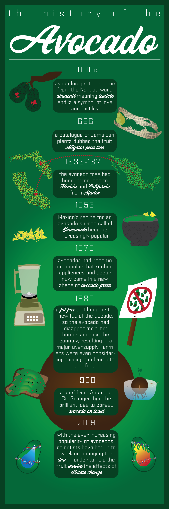
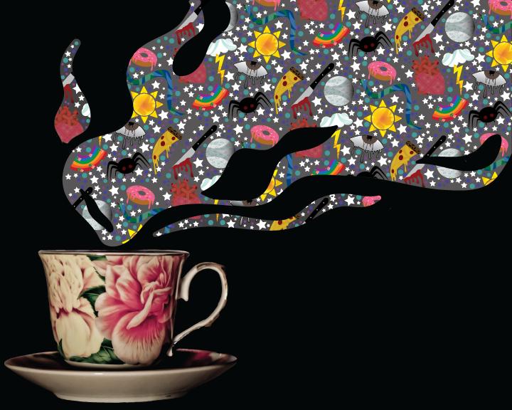
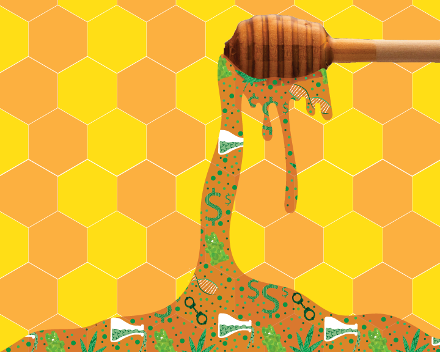
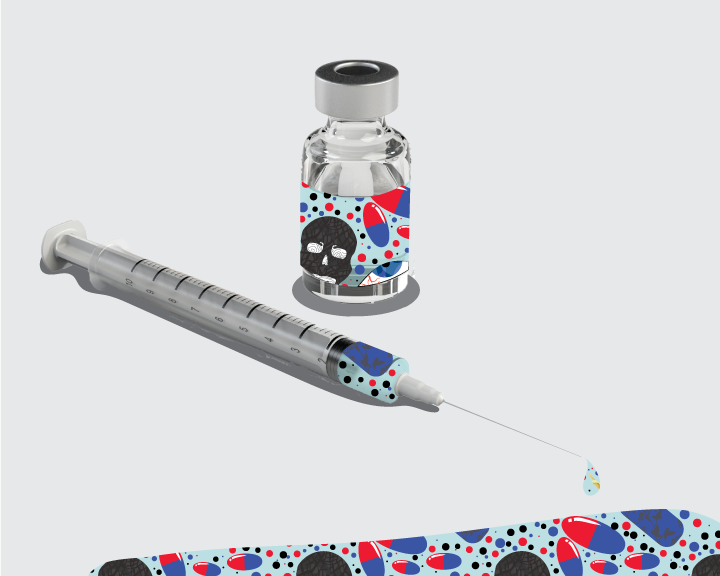

December 4, 2019
I Have a Thing for Avocados

My icon project showcased avocado toast. Kevin gave me the idea to base my final project on avocados and the history of avocados. I had a lot of fun with this one, my dad even brought me a bunch of avocados to look at while I worked on this project at home. It was really fun.
November 4, 2019
Articles and Art



I couldnt decide what I wanted to do my articles on (notice a consistant pattern of indeciciveness here?), but I found an Article on Ayahuasca and decided to run with the drug theme. This First Article is about how Ayahuasca is a very strong tea-like drug that helps people change their lives through the visons they recieve from it. This second articleis about how THC was found in a childs DNA, it turns out the father accidentally gave his son honey that had been laced with Marijuana. He was criminalized, but THC and CBD should be decriminalized. My third article is about the Opioid epidemic and how it effects all races, and is not just effecting minorities. Many people suffer from addiction to Opioids, and it is only getting worse.
October 7, 2019
Icons That Tickle My Elbow

I had a lot of difficulty deciding what my icons should be. I asked a bunch of my friends and they all said paintbrush, hence the paintbrush. I really like avocado toast, hence the avocado toast. My friends all hate the hand, they don't think it represents me at all... but I think they're wrong. Once I figured out what I wanted to do, I had a lot of fun with creating these icons. I created them using the same shape, as well as shapebuilder, and making sure they were all slightly coming out of the lines.
September 1, 2019
Baby Bash, The Isometric Avatar
This is little ol' me, her name is Baby Bash. Her tongue is out because... well so is mine in the picture of me in my bio. She's holding a paintbrush because I have an art business and since she is my mini me, so does she. The paint is dripping onto her shoes because all of my clothes have paint stains. I made sure to include piercings, a star necklace, and converse because those are with me every day! I had a lot of fun creating her because I had a lot of freedom with what she could look like and what her personality would be.